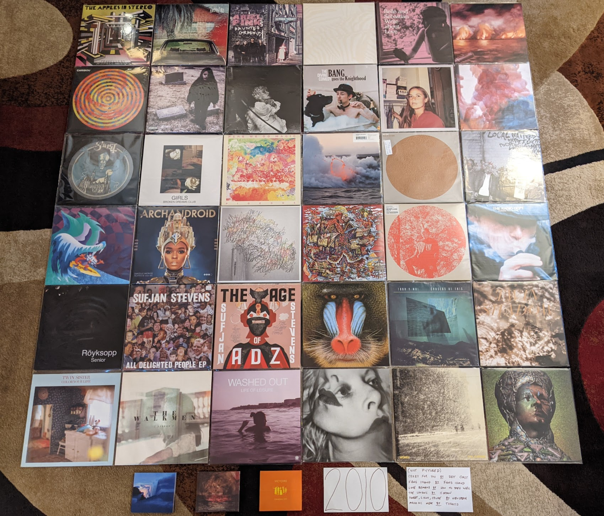

2010s¶

2010s Overview¶
This was an interesting decade for music and for my relationship with music. When it began, we were at the point I like to call “peak indie” where a collection of small labels were releasing the most culturally relevant albums, and the big labels were trying to pretend they were the small labels in order to compete. I was writing for a local music blog, and attending multiple large music festivals per year. These were mostly the (now rare) club festivals that were spread out among multiple small venues over several days. These were the kind of festivals that demanded research and study to attend properly. I loved the process of reading about all the bands, getting ahold of a sample of music, and laying out my plan to rove about the clubs to catch my favorites. The tee-shirts and vinyl records bought from merch stands at these shows are now staples of my wardrobe and album collection today.
When the decade closed, mainstream pop from the major labels had returned as the dominant force in the music scene. This kind of mainstream music had never really gone away, it was more that independent music had receded to the shadows again. I have nothing against mainstream pop, as my lists for earlier decades show. My objections mostly have to do with the impacts of how modern pop music is made. Today, your average pop single is written and produced by a committee of dozens. When that many folks contribute to the creative process it has the effect of sanding every edge off of the track by the time it reaches the finish line. Any remaining distinguishing characteristics are so intentionally created, that it can’t help but feel contrived. I haven’t been to a music festival since 2013. That last one was the inaugural “Crossing Brooklyn Ferry”, a combination of the most high brow indie combined with artists that typically get labeled as contemporary classical. This was my Woodstock, lol. The rest of the decade, 75% of the live music I saw was the local symphony orchestra, This was where “I got old”, but where exactly did it happen?
2010s Stats/Favorites¶
Section started: 13 Aug 2021
Section complete: 7 Nov 2021
Latest update: 13 Jan 2024
Total Albums: 182
Top Artists:
6 albums (1) - Lana Del Rey
5 albums (1) - Beach House
4 albums (5) - Ariel Pink, Ghost, Son Lux, Sufjan Stevens, Steven Wilson
Favorite album:
At the risk of sounding like a cliche’ indie music bro…
The Suburbs by The Arcade Fire

…but how in the world did this get the album of the year Grammy?
Favorite Song:
Braids made one of my favorite songs of all time and put it on a really boring electronic album:
“In Kind” by Braids
2010¶
I knew going in that this one was going to take a while. Just staging the below photograph took about an hour. I listened to more new music in 2010 than ever will again in any single year. This is the last year of doing things the old way (without Spotify) so I had to keep notes on what I was listening to, instead of making a playlist to keep track. Thanks to these notes, I know that I listened to (and rated!) 96 records in 2010. All 7 records I considered five stars out of five are on the list below, but 4(!) of the records that I gave 4.5 stars are no longer are among my favorites:
I Heart California by Admiral Radley - I gave this more credit than it deserved because I liked Grandaddy so much.
Avi Buffalo by Avi Buffalo - I’m horrified by the accusations against the leader of this band, and can’t bring myself to listen to them anymore.
Wilderness Heart by Black Mountain - Too safe and derivative for me now.
Epic by Sharon Van Etten - Just sounds so boring to me now.
This was my peak year of listening for a range of reasons. First, the indie music of the day was very much aligned with my tastes. Second, I had just moved to a new town (Rochester, NY) where I could see more live music, and spent quite a bit of time alone to indulge in my solitary hobbies like collecting music. Finally, I had mastered the old ways of discovering new artists, tracking down a way to get a taste, and acquiring the things I wanted to hear more of. It was easy and often inexpensive to get digital copies of pretty much anything, and I did. I’m also convinced that Spotify (released in the following year) through infinite choice is somehow making me less interested in finding new music. Or maybe I’m just getting old.
This was also the last year that I bought CDs as a primary means of consuming music. At this point I recognized that the CDs were just a vehicle for ripping MP3s and had no additional value as a medium. I started out the year buying CDs, but stopped a few months in. I have since nearly re-bought nearly all my favorites on vinyl, a format that is an experience unto itself. From here on out you will still see a few CDs but they are all New Amsterdam label contemporary classical releases that aren’t on vinyl, and in many cases cannot be streamed.
Finally, this was the year the seeds of this project were begun. I had been making lists of my favorite albums for several years by the time 2010 came around. I decided to make a list of my favorite albums from the decade that had just ended, and after commencing the project started making new discoveries of new albums, and seeing old albums in new ways. The project expanded and got more complicated. Eleven years later, here we are.
{kind=link}
Travelers In Space and Time - The Apples in Stereo - I seem to keep forgetting how good the last two records by this band are. I definitely rediscovered this one while compiling this list. Everyone seems to hear the 80s ELO influence here, but I also still hear a nice backbone of the psych and bubblegum that runs through their whole catalog. We also get a great contribution from Bill Doss in “No Vacation” which would be his last great track for Elephant 6 before he passed away way too young. [Memory: It still seems kind of crazy to me that such a big act played Bugjar on this tour, and I was glad to walk down the street to attend]
The Suburbs by The Arcade Fire - [2010 FAVORITE] The lead up to the release of this record is almost as memorable as the article itself. I remember studying the lead singles trying to imagine what the concept double record might sound like. They were the biggest band in indie and I was one of the millions who couldn’t wait to see what they came up with next. There was a bit of a backlash against this record when it came out, mostly because of how much mainstream attention it was getting. I think over time the profile of this recording has landed right where it belongs, acknowledged as one of the most important albums of its era. [Memory: I remember hearing a pre-release broadcast of “Sprawl II” on WITR when I was driving through McDonalds for breakfast. I was so into it I had to pull my car over and park to listen.]
Before Today by Arial Pink - Not as consistent as the records that would follow, but this is where things would finally come into focus enough to work for me. The tracks “Fright Night” and “Round and Round” are outstanding, and rest of the material does just enough to make this a favorite album. [Memory: The first time I ever listened to this record I was on a flight for a work trip to Brazil. It was a stressful journey and I had to turn off this music which was making me feel more uncomfortable.]
Teen Dream by Beach House - There are some very classic records this year! I was already very on board with this band when they released this breakthrough album. It was a huge departure with way more brightness and pop. I saw them twice on this album cycle. It was quite the experience to see thousands of people shouting the lyrics to “Take Care” at the Pitchfork Music Festival, when I thought back to the band I saw play to a couple dozen people at a basement bar in London. [Memory: This album came with a DVD of very arty, mostly disturbing videos for each song. They are so memorable, it is hard to hear the songs without picturing these videos.]
Write About Love by Belle & Sebastian - This is the album where Sarah Martin’s vocal contributions started to come to the foreground. “I Didn’t See It Coming” is one of my favorite latter day B&S songs. This is also where things started to slide downhill a bit from their second career high. Still an excellent indie pop record. [Memory: I remember that I barely realized this came out at the time. This was kind of shocking to miss a release from one of my all time favorites, but that is how much great music there was at the time.]
The Besnard Lakes are the Roaring Night by The Besnard Lakes - I always have a hard time picking my favorite by this husband/wife band. I think it might be this one. They master the combination of post-rock atmospherics, dream pop and guitar based alt rock. I think it is the guitar work that really pushes this one over the top. “And This Is What We Call Progress” might be the best encapsulation of what these guys do so well.
Crazy for You by Best Coast - The best of the surf rock revival records, this holds up pretty well a decade later. [Memory: They were so disappointing live, I have never been able to see their music the same way.]
Television Landscape by William Brittelle - Thank you eMusic for pointing out this record, which would not only introduce me to one of my all time favs, but get me up to speed with New Amsterdam records. This isn’t in the “indie classical” (lol) territory that was typical for NewAm and is more of an art rock record. A fuzzy, somewhat psychedelic concept album that tells the story of someone going in and out of sleep watching late night tv. The Miami Vice themed “Sheena Easton” is one of my all time favorite songs. [Memory: There were some truly awful lipsynced video performances on YouTube of this record back in the day. I kind of wish they still existed. They really fit the vibe of this record somehow.]
Swim by Caribou - All of a sudden Dan Snaith was making music that was somewhat dance-able. I don’t think this was actually intended for the club, but the beats are there. Very much still album oriented, art-electronic, the connections to dance music made this much more accessible to the indie kids. That said it is still the smart kind of electronic music I love as well. [Memory: The beats and pace of this album made it a workout playlist favorite of the day. Listening to this brings up strong memories of the gym in my office basement.]
Crystal Castles II by Crystal Castles - This is some truly obnoxious electronic music that I have to be in the right mood for. The slight bit of goth they mixed into their formula is what made me enjoy this record more than their other work. I really have to be in the right mood for this. [Memory: It is hard to think of this band without also remembering hipster runoff]
Halcyon Digest by Deerhunter - I see the career of this band like a projector being brought into focus. The earlier records got progressively less fuzzy and you could see a wonderful image taking shape. That picture is perfectly formed here. The wonderful pop hooks bring everything together perfectly. For the next record, the dial was turned too far. [Memory: I tend to associate this band with Bradford Cox, but seeing them perform live made me realize how important Lockett Pundt is, especially to this record.]
Bang Goes the Knighthood by The Divine Comedy - By far the most recent edition to my list for this year, I’m not sure why I didn’t listen to this at the time. Neil Hannon has always been making the kind of chamber indie-pop that I love, but I only discovered his catalog in the last few years. I do remember eMusic featuring this heavily when it came out, but that cover just didn’t do it for me. A solid record like always from this guy, with two of his best tracks in “Assume the Perpendicular” and “The Lost Art of Conversation”. [Memory: For years I had avoided this era of the Divine Comedy catalog until the vinyl reissues in 2020. Why I have no idea, this is great.]
I Will Be by Dum Dum Girls - Being derivative can be a compelling art form, and I don’t mean that derisively. Kristen Gundred has made a great body of work by imitating and interpreting the sounds of the past. Here we get some great old fashioned garage rock with a touch of surf rock drumming. It is very much the sound of the past and of 2010. “Bhang Bhang, I’m a Burnout” is a killer single. [Memory: Gundred assembled a very solid band to interpret her home recordings live. They were very memorable for their sound and image. I managed to see them open for other acts on three occasions. They toured a lot.]
Skit I Allt by Dungen - A much lighter take on their psychedelic sounds. It’s almost like they saw all the english language imitators like Tame Impala and decided to do something a bit different. It worked out very well. [Memory: Seeing them at Mohawk Place in Buffalo was a fantastic show. It also made it clear how talented this band is as instrumentalists.]
Fang Island by Fang Island - A completely unique record that feels like metal combined with church music. Such a happy, uplifting record. No one has ever made anything close to this again, even Fang Island. [Memory: These guys played a great opening set for Joy Formidable at the old Club at Water Street. One of my favorite live shows ever.]
Opus Eponymous by Ghost - More directly connected to the metal of the past (particularly Blue Oyster Cult) than the music that would come later. The whole concept of the band is fully aligned here though. The over the top Satanism, the focus on melody and atmospherics are all here. The songs aren’t as consistent as the later records, but “Ritual” is still the best summary of what these guys do well. [Memory: I watched the video of “Ritual” dozens of times on YouTube and was fascinated by the image that they projected]
Broken Dreams Club by Girls - A much smaller work in both scope and sound than what would come before and after. This little EP is also an essential part of this bands very limited output. Much more directly reverential of the early 60s pop music that was a significant part of their debut album. “Broken Dreams Club” is a fantastic old fashioned torch song. [Memory: I saw them play at Pitchfork 2010 right after this was released. I’m really glad I was able to catch them during their very short time of existence.]
Pigeons by Here We Go Magic - This is such a wonderfully strange recording. I really liked the five person incarnation of this band. Everything is so fuzzy and warm, weird and beautiful. The lead singer of this band is great, but the band was never the same after the other members were ditched, especially bassist/producer Jen Turner. [Memory: I saw them open for Dr. Dog at Town Ballroom in Buffalo, and it was a great show. A very high Jen Turner decided that she wanted to feel the fabric my shirt was made out of. It made me and her bandmates uncomfortable, and they led her outside.]
Momo by Hooray for Earth - The start for another one of those bands that had a brief, but productive run in the 2010s. This is a little more lowfi than what would come later, but those big layered guitars and synths are in place, with the pretty lead vocals. One of the more underrated things they can do are those weird, avant garde guitar solos they occasionally break out, like in “Comfortable, Comparable”. [Memory: These guys were the first to play at a memorable three act show at German House in late 2010. It wasn’t great actually, as it seemed like they were struggling to represent this kind of music in the live setting.]
One Life Stand by Hot Chip - The second album by the more mature version of this act is another winner. Some really fantastic pop songs with a techno backbeat. [Memory: I like the title song to this album so much I decided that I only needed a promotional 45 of that track by itself. It also confused me when I took the picture above and a grabbed the wrong album for the picture, oops.]
Love Remains by How to Dress Well - In general I didn’t love the weird minimalist electro-R&B stuff that Pitchfork was pushing back then. I do like this though. [Memory: I saw them play some of the tracks off this record with a string quartet at Pitchfork 2011. I know there was a recording of this, I wish it was on Spotify, as it is the definitive recording of songs like “Suicide Dream 2”.]
Penelope by Sarah Kirkland Snider - This was the high water mark for the “indie classical” thing that Pitchfork was trying to make happen, and even if they won’t admit it now, so were the artists that got lumped in with the fake genre. It is amazing how many of the things under that umbrella involved Shara Worden, and here she is. Described accurately, is a stunning collection of art pop written and performed by classically trained musicians. [Memory: I remember trying to decide if I needed a CD copy of this.]
The Longing by Kordan - The best part of my short time writing for the music blog was getting access to lots of free music that bands would send in. This was the best record I found that way. A really interesting combination of electro-indie and classic guitar based goth, this is right up my alley. This never really got any mainstream press. Makes me wonder how many other great records are out there and never find an audience. [Memory: I was so glad to find a note about this record in the album list I compiled at the end of 2010. Without this I probably would have never heard it again. How many things like this have I forgotten?]
Gorilla Manor by Local Natives - I was really surprised at the time that the indie kids were going for such straight ahead rock music. This is the basics of pop/rock done to perfection, with some particularly great vocal harmonies. “Camera Talk” is one of my all time favorite songs. [Memory: At Pitchfork 2010 these guys were the hot band of the moment. I’ll never forget the kid towards the front of the stage who held up his vinyl copy of this record that he thrust towards the stage in rhythm to the music. It was a great show.]
Mines by Menomena - A more mature effort from a band that had been making lighter more whimsical faire. It was a bit of a risky move, but it works out. The saxophone and floor toms are still carrying things, and the vocals are delivered with same yelp like intensity, but this is a more measured and thoughtful collection of songs. [Memory: This was another record that made this list years after the initial list was made. I was hearing so much music around this time, I lost track of some pretty great records. Glad I still had the vinyl record to remind me!]
Congratulations by MGMT - I liked the first record, but it didn’t prepare me for this. The fusion of classic psychedelic sounds and the more modern electro-indie was a revelation. “Flash Delirium” does so many different things really well, and is an all time favorite. [Memory: This album got a mixed reception at release, as a result of how different it was. I always had a sense its reputation would grow over time, and this turned out to be true.]
The Archandroid by Janelle Monae - A stunning genre study that covers everything from the Minneapolis sound to Bond themes. I really miss this and fear that she is never going to make music like this again. [Memory: I became aware of this record thanks to the “Sound Opinions” show that used to play on WRUR back in the day.]
High Violet by The National - Matt Berninger’s voice is so beautifully weathered on this record. I also feel like this catches the band at their creative peak before they (particularly the Dessner brothers) became distracted by side projects. A stunning work, and one of the finest indie records made by this generation. [Memory: I saw them perform in Cincinnati as a part of the MusicNow festival in 2011. They performed “Vanderlyle Crybaby Geeks” using only natural concert hall acoustics. It didn’t totally work, but it was a memorable moment no less.]
False Priest by Of Montreal - The last album I love, from one of my favorite artists of all time. The albums after this have their moments, but this is the last one that I like as a whole. This is another “low budget Prince” record, with increasingly edgy and intellectual lyrics. This whole album feels like Kevin Barnes is bumping up against his limitations as a songwriter and vocalist, but it never stops being compelling. Some great guest spots by Janelle Monae and Solange. [Memory: My vinyl pre-order of this record came with a tee-shirt that is still a star player in my wardrobe]
Sweet, Light, Crude by Newspeak - Classical music nerds start a rock band and accidentally rediscover prog without realizing it. I really miss the spirit of the early NewAm releases. [Memory: There used to be a great live performance of this on YouTube. I feel like the NewAm folks are embarrassed by the early days of their scene, which in my opinion was the best part.]
Heartland by Owen Pallett - Afraid of being sued, he starts releasing the music of the Final Fantasy project under his own name. A huge step up in production quality and instrumentation, with the same quirky bipolar songwriting of the first two records. A fine transitionary work that is setting up the all-time classic that would follow. [Memory: My vinyl copy of this record has a single large pop in the first track. I listened to it so much, I can hear it when I stream the track on Spotify.]
Clinging to a Scheme by The Radio Dept. - Such a pleasant indie-pop record. This is the kind of sincere, serene music that only Scandinavian bands can make for some reason. [Memory: This music was unexpectedly compelling live, as I discovered at the Pitchfork festival in 2011].
LP4 by Ratatat - The last album (and my second favorite) of the classic period for this band. Each of the albums added new elements, and they all add up to something pretty compelling, that manages to avoid sounded cluttered. This feels like a more organic, American version of Justice. [Memory: I remember ordering this for release day at Lakeshore Record Exchange. At this point I was still buying most of my music in physical form, and was split between the CD and Vinyl format. This seemed like something I wanted to own on vinyl, and that was the right choice.]
Senior by Royksopp - It is very strange that they went out on this moody ambient masterpiece, but I’m not going to complain. Not a whiff of the pop songcraft that ran through the first three records, but still a great collection of electronic music that uses their fundamental sound in a very different way. [Memory: I listed to this on repeat during a flight to Brazil in December of 2010. It now is the sole record on a spotify playlist called “Airplane Sleepytime”.]
All Delighted People by Sufjan Stevens - I used to see this as the last stand of the Sufjan who made the “States Project” records, but today I hear it more as the analog flip side to Age of Adz. It is the last hurrah for the amazing big band that toured Illinois though. I increasingly wonder if my favorite era of his music will end up being the span between The BQE and Age of Adz. [Memory: I bought a used copy of the now departed Spiral Scratch records in Buffalo. It was before the value of indie vinyl blew up and I couldn’t have paid more than 10 bucks for this amazing record.]
The Age of Adz by Sufjan Stevens - He had made some radical changes in the past, but none as big as the shift to glitchy electronic music here. A stunning record with a level of invention that he has never reached again. [Memory: I loved this whole thing immediately, with the exception of “Impossible Soul”. It took me a long time to appreciate all the over the top auto-tune, but I now see it to be some of his finest work.]
Wild Smile by Suckers - Fun music that doesn’t take itself seriously at all. They were refreshing in a very serious time in indie rock. It is almost like the comedy version of the way more popular Local Natives. I wish these guys got more attention in their short career. [Memory: This is one of the last bands that I discovered from Greg at City Lights records in State College, PA. He wanted me to hear them since they opened for MGMT and Menomena, to of my favorite bands at the time.]
Causers of This by Toro y Moi - At the time this was considered one of the more difficult chillwave records. We now think differently, and realize that chillwave was more of an aesthetic that was applied to a range of musical styles, in this case experimental electronic music. I loved this record back then, I may love it a bit more 11 years later when I write this. Wholely unique, I’ll never get tired of this [Memory: This was one of the last CDs I ever went down to a record store to purchase as a primary means of consumption. It was obscure enough to not be available on eMusic, but the great “alternative” record store down the street (Lakeshore Record Exchange) had it out on the featured rack in the electronic area.]
Forget by Twin Shadow - At the time, like many other music fans, I tended to lump many things into the “chillwave” bucket that were really something else entirely. This album is a rare example of something that I didn’t appreciate as chillwave that was very much inline with the conventions of the aesthetic. Maybe the quality of songwriting felt to high for that scene. I’m always in the mood for this amazing record. [Memory: Every now and then Carles from Hipster Runnoff would make a genuine post in his own voice about a artist he actually liked. His post of the song “Tyrant Destroyed” is how I found one of my favorite albums.]
Maniac Meat by TOBACCO - Some very experimental electronic music. Of all the releases by these guys under different names, this is for some reason my favorite. It is almost like a disturbed version of Kraftwerk. [Memory: I still like this. But I feel like the me who could discover music like this was a different person.]
Color Your Life by (Mr) Twin Sister - “All Around and Away We Go” is a remarkable pop single. Everyone else was making synthpop and these guys were skipping right to late 80s sophista-pop. Of all the bands from that time I find it interesting that this group is still alive and very active. [Memory: I saw them play at two consecutive Pitchfork after shows. They opened for Bear in Heaven in 2010 and were the headliners the next year. Great live band.]
Cathedral City by Victoire - Of all the young classically train musicians who got lumped into the fake “indie classical” thing, Missy Mazzoli is my favorite. Her band Victoire almost justifies the existence of the genre. A rock band who plays like a chamber ensemble, this is some super compelling stuff. Mazzoli’s music is so interesting. Something always seems a little off in just the perfect way. [Memory: I feel so lucky that I got to see them perform most of this album at Crossing Brooklyn Ferry in 2012. That is a performance I will always treasure.]
Libson by The Walkmen - This is their record that I tend to underestimate until I put it on. It is probably the most subtle of their fantastic catalog, but also one of the finest. A more upbeat, surf rock influenced affair than the prior release, but those amazing horns remain. [Memory: I saw the band a few times live, but I think the best performance was at the Town Ballroom in 2011 on this tour.]
Life of Leisure by Washed Out - The use of “Feel It ALl Around” as the theme song to the show “Portlandia” made this the definitive article of 2010s hipster culture. I think in retrospect it is also the best summation of the “chillwave” aesthetic. [Memory: I don’t know that anything makes me more nostalgic for my early 30s more than the song “Get Up”]
Gemini by Wild Nothing - I wish more bands had decided to operate in the space these guys explored. Combining the chillwave aesthetic with the conventions of jangle pop is very compelling. [Memory: You wouldn’t think it from the album, but this is a great live band. I was blown away by how good they were when I saw them at NxNE 2011.]
Public Strain by Women - One of the most unique bands that every existed, their second and final album would be their definitive statement. There is so much going on here, ambient electronic soundscapes, angular post-punk, straight ahead pop hooks, and a few things I can’t really identify. A difficult but rewarding listen. [Memory: This was one of the last great records I remember discovering during one of the best years in music I can remember.]
Odd Blood by Yeasayer - This album was a bit of a shock when it arrived. Their debut had given some “serious music” vibes, and all of a sudden they wanted to party. Another one of those albums that seems way more “chillwave” in retrospect. That cover seems to be anticipating the vapor wave aesthetic that would develop in 2011! [Memory: Hearing the rhythms of “Ambling Alp” echoing through Union Park might be my most enduring memory of my various Pitchfork Music Festival experiences.]
2011¶
I bought a house in 2011, and all of a sudden I had way more room for records. This was when I really committed myself to building a new music collection in vinyl records that would better represent my tastes and world view as a adult. This was also the year that Spotify was released and changed my consumption of music forever. When I listened to my playlist of favorites for this year, I was struck by how many of the releases shared a consistent sound. This was definitely the year of synthpop revival, chillwave and the seeds of vaporwave. 2011 has a distinct sound and I like it. Much of this music was designed to invoke non-specific memories of the 1980s. In retrospect, this music doesn’t really have many direct connections to that decade, but it all sure sounds like 2011.

Night of Hunters by Tori Amos - Tori makes peace with her classical music roots and makes a brilliant record. Playing these reinterpretations of instrumental music shows off her extreme skills on the piano. [Memory: I saw her in NYC on this tour, and it was an amazing show. Having a rock band and a chamber ensemble was a great way to see her music presented. “Shattering Sea” was quite the show opener. Also found a great sushi place right by the venue.]
Burst Apart by The Antlers - They make a strong follow up to their NPR famous prior record. This has the same enjoyable loud/soft dynamic, and these guys are even giving into the synthpop bug a bit. Very pretty, and something I am always in the mood for. [Memory: I saw them at Crossing Brooklyn Ferry the next year and I was struck by how refined their performance had become as a band. It was both a good and bad thing.]
Parallax by Atlas Sound - For a brief moment Bradford Cox was the most compelling thing in music. His work from about 2008 to 2011 with Deerhunter and this solo project is universally outstanding. The catching little, reverb soaked tracks on offer here are both obvious and completely unique. “Angel is Broken” is one of my favorite songs of all time. [Memory: Yet another great performance from Crossing Brooklyn Ferry, Cox absolutely nailed almost this entire album in a compelling solo set.]
Smile by The Beach Boys - All of a sudden it was a real album that actually exists. It was surprising how exactly it matched the Brian Wilson version that been released years prior. Was it made to match, was it always supposed to sound this way? It sounds pretty much done, especially by 2010s indie rock standards, and wow this fits right in with the music of the time. Warm poppy psychedelic music at its finest, the world is better with this album in it. [Memory: I was in the middle of a huge Beach Boys phase when this was announced, and I bought the giant box set with all the extras. Probably more than I needed.]
Native Speaker by Braids - I really miss the first iteration of this band. The combination of spare electronics, strong percussion, and yelping vocals was the best in Canadian indie rock in the strongest era of Canadian music. They would make one more song in this style “In Kind” which is my favorite song from this decade, though the album it would appear on is mostly boring electronica. That is not the case here, this is one of the most exciting records in my collection. [Memory: I loved the video of the band performing “Plath Heart” and “In Kind” at the Polaris Prize gala in 2011, I wish that I could still stream that amazing performance.]
Zonoscope by Cut/Copy - Much of the synthpop being made in 2011 was alluding to an imagined, but non-existent alternative version of the 1980s. Not these guys, they would have fit right in that decade. One of best “new wave guy” voices of all time. I’ve always wondered if their name was an acknowledgement of how much this music borrows from the past. Who cares, its like New Order are still around making great new music. [Memory: Jumping up and down to this stuff at Pitchfork 2011 with all the indie kids]
The Valley by Eisley - The kids in this band grew up quickly. The primary singer and songwriter (one of the Dupree sisters, I’ve never been able to keep them straight) was going through a divorce and this is the main theme on this record. No more dreamscapes about horses growing out of the ground, the mood is alternately angry and reflective. It worked surprisingly well. Also, the vocal harmonies of the three sisters are outstanding. [Memory: By the time this had come out, I had forgot about this band, but an amazing performance of the title track on YouTube directed my attention to this gem]
Build A Rocket Boys by Elbow - Another extremely solid record that I really enjoy, but never need to own on vinyl. There is something about the sound of this music that will only ever make it a 3.5 stars out of 5. If they made more songs as interesting as the Krautrock inspired “The Birds” this might reach the next level in my collection. [Memory: At the time I was almost disappointed that I like another record by these guys, since it somehow feels a little obvious and boring to me at the same time?]
“unlearn.” by **Fergus & Geronimo* - Very few artists have tried to follow in the steps of Frank Zappa, but these guys have managed to do it pretty well. This owes huge debt to the early Mothers records, and I like the sense of humor way better, including the Pitchfork diss track, “Wanna Know What I Would Do If I Was You?” [Memory: Immediately before the Spotify era, I was using an curated, online discovery radio service the name of which I can’t remember. For some reason, the classic lowfi single by these guys, “Harder Than It’s Ever Been”, was listed on a “This is Chillwave/Glofi” list. That is why I blind bought this record on vinyl. It was great, but very different from that early single.]
Father, Son, Holy Ghost by Girls - Their career was short but highly productive. The third record gets a little proggy at times, but this is the same kind of tightly put together pop music as the first two. [Memory: In 2020 I made a Discogs catalog of my records and I was surprised to discover I never bought a vinyl copy of this. I’m glad I fixed that while it is still in print.]
Let England Shake by PJ Harvey - The wildest left turn in a career filled with them. Still singing exclusively in her church voice, PJ writes a bunch of songs exploring Britain’s imperial past. The saxophone and auto-harp are starting to replace the guitar. This is an artist peaking later in their career [Memory: I was really excited for this record, and followed the release cycle closely. I remember there was a preview performance of a track at some sort of UK National TV broadcast that the queen was supposedly watching at home. I wonder what she thought of PJ’s song about the missteps of the British Empire and the wild plume of feathers that she wore in her hair.]
The January EP by Here We Go Magic - I’m glad we got a few more songs from what was the best iteration of this band. After this, Radiohead’s producer would ruin things with too much production and too much focus on the lead singer/songwriter. This era was defined by contributions from an ensemble of musicians, particularly the warm fuzzy production stylings of bassist Jen Turner. It was a short but brilliant run by the five piece version. [Memory: Few albums have disappointed me more than the one that came after this one.]
True Loves by Hooray for Earth - [2011 FAVORITE] It took a while for them to release their first full length, but it was worth the wait. This stood out during a time when most indie rock was intentionally lofi or otherwise rough around the edges. The album is textured and slickly produced. There is a pleasant warmth to the songs, and everything feels nostalgic about a musical past that never existed. One of my all time favorites. [Memory: This is the band that made me find common interests with the Rochester music blog I would participate in for a little while.]
We Are the Arms by Gabriel Kahane - Gabe is a singer songwriter that grew out of the music school music scene in New York City. This is music that manages to be very beautiful, despite being very complex. “Last Dance” is still his finest work. [Memory: My enjoyment of this record is what made me realize I wasn’t really cut out to write for the indie rock blog I was contributing to. I did write a post about this song, but it felt wrong.]
Too Beautiful to Work by The Luyas - The Canadian music renaissance was starting to wind down, but there were a few great new artists still popping up. Many of them would start off strong, and then trail off. The Luyas would never again match the minimalist brilliance of this record. It is hard to believe they were able to ever get a French horn and zither sound to work as well as they did here. [Memory: I was able to attend the 2011 NxNE music festival as part of the press for the blog that I contributed to. I saw a memorable performance by this band early in my first evening club hopping with my press pass.]
Wits End by Cass McCombs - Sounds like something out of the 70s. Somber songwriter music, with some really interesting light psych elements. [Memory: I have a weird relationship with this record, as I continually forget how much I like it. I even forgot to add it to this writeup/picture, even though it made it through the initial filtering process and is clearly in my notes.]
Floral Shoppe by Mcintosh Plus - This is the first album I’m writing about that isn’t on Spotify. That is because this is illegal music. I didn’t realize that vaporwave was happening until it was mostly over. This is generally pointed to as the masterpiece of the genre, and I tend to agree. It is amazing how the various R&B tracks and sophista-pop tunes get morphed into a catchy avant garde swirl. [Memory: I spent months tracking down a reasonably priced copy of the vinyl “bootleg” that isn’t really a bootleg, they just call it that because this can’t be legally sold due to being comprised completely of other people’s music]
We Must Become the Pitiless Censors of Ourselves by John Maus - A masterful combination of synthpop and goth, this is an exceptional record. I don’t think I’m politically well aligned with this guy, and in retrospect the right wing agenda seems embedded in the title of this album. The music is first rate though. [Memory: I was introduced to this guy at a strange performance at a Pitchfork aftershow at Schuba’s in Chicago. The dude just screams over a backing track of his songs. People mosh, it is weird.]
Player Piano by Memory Tapes - I don’t think this guy liked getting lumped in with the chillwave crew. He responded with a weird kind of electronic pop music. Very bright and upbeat with little bursts of eccentric darkness. A wholely unique work, and what I see when I think back on what I miss about this period of popular music. [Memory: This record was hotly anticipated by the Pitchfork people, but they were completely confounded by it]
The English Riviera by Metronomy - This is by far their most straight forward pop record, and it lacks the instrumental experiments of most of their other work. The best moments on their records tend to sound like a kid playing with all the sounds on the casio, and this mood is perfected on “The Look.” [Memory: For some reason it took a while for me to warm up to this record, and I only added it to my favorites about 10 years after its release]
All Things Must Unwind by My Brightest Diamond - Of all the artists working in the area of pop and “fancy music” coming together, I don’t know that anyone does it better than Shara Nova (formerly Worden). On this album she goes all the way and uses a classical chamber music ensemble as a backing band (yMusic, more on them later). [Memory: I saw Shara live four times on this album cycle, immediately before and after release at Bugjar, and twice with yMusic at Music Now 2011 and Crossing Brooklyn Ferry 2012]
Awake by Now Ensemble - Straight up contemporary classical that manages avoid all the screechy violin bullshit and be enjoyable. They also manage to do something Mr. Holland couldn’t, make electric guitar fit without seeming contrived. “Change” is by far the best thing that Judd Greenstein” has ever written, and the performance here is first rate. The CDs start to creep into the pictures starting here. [Memory: Seeing these guys perform at Crossing Brooklyn Ferry synchronized to the video for the track]
Belong by The Pains of Being Pure at Heart - They pick up a bit of a grunge hard edge while keeping that delightfully gentle disposition. This is the kind of music that made me feel nostalgic a couple years after it was released. [Memory: I felt compelled to collect all the 45s from their first two records. I’m glad I did, they are some of the best singles from this whole era. “Belong” is an especially amazing track.]
Tomboy by Panda Bear - It is strange to look back on how big Animal Collective and their solo projects were ten years ago. I don’t know that any other band has dropped off the radar quite as much as they have. Some of it really holds up though, and no more so that this release. It seems to answer the question, “what if Brian Wilson made electronic music?”. A minimalist masterpiece. [Memory: Having an excited conversation about how great this was with one of my blog colleagues while I was attending a Penn State volleyball match]
Dye it Blonde by Smith Westerns - Sometimes a band seems to have one amazing record in them, and immediately after release they disappear never to be heard of again. This record really stood out in the 2011 indie scene with its strong guitar focus and singalong choruses. Almost like T. Rex lite. [Memory: Seeing these guys at Pitchfork 2011 was kind of remarkable, since this didn’t really fit the Pitchfork scene at the time]
New History Warfare Vol 2: Judges by Colin Stetson - I always wonder why music this strange sometimes hits the popular consciousness, but I’m glad it does. I doubt I would have found this if it had’t made the NPR music scene. Our bro Colin is putting microphones all over his saxophone and mixing the results into percussive electronica, without any keyboards. [Memory: Once the Spotify algorithm realized I liked this guy, it wouldn’t stop playing his music for me, even if it didn’t really fit in with what I was looking for at the time]
We Are Rising by Son Lux - This is the peak of NPRs influence over popular music. The creation of this was the focus of the highly publicized “Project Album”. The resulting product was pretty great as well. In retrospect this feels like one of the first shots fired in the fusion with the contemporary classical scene. It is also a nice transitionary record between the early minimalist hip hop of the first record, and the massive layered sounds to come. [Memory: It is hard to listen to this without thinking of all the making of videos NPR posted during its creation]
Underneath the Pine by Toro y Moi - Again this guy is ahead of the times. He made one of the first distinctly chillwave records in the year before, now he is in front of the alternative R&B movement that was the next big thing. I only wish he kept making music that was this interesting. [Memory: I blind bought this on vinyl. Spinning the record for the first time was a big surprise, but a great experience]
Grace for Drowning by Steven Wilson - Wilson was producing a remaster series for King Crimson at the time, and it shows. Maybe the only time someone has attempted to follow Lizard era Crimson. A very dark and mysterious record. This record made it clear Porcupine Tree was never coming back, if he was going to make this kind of prog under his own name. “Raider II” is one of the greatest prog epics of all time. [Memory: I actually came to this music first through the live version on the Record Store Day exclusive Catalogue / Preserve / Amass]
Beautiful Mechanical by yMusic - Probably no group of musicians was more key to the classical music incursion into pop music than these folks. This album is the perfect artifact from that time. The music is mostly written by artists more on the pop side of things, but the results are very much “new music” for chamber ensemble. If only Sufjan could have participated, and this would feel like a complete statement. [Memory: I supported the Kickstarter to take this album the final mile and received a signed CD for my trouble. It has signatures from the ensemble and notable figures like Ryan Lott, Annie Clark, and Shara Worden. It is the perfect keepsake for a moment in musical history.]
Glossolalia by Zambri - I became aware of the Zambri sisters through their participation in the Hooray for Earth record that came out this year. I found their song “On Call” on SoundCloud when looking for things to write about on the blog. It is a striking mixture of hard industrial, and New Jack Swing. This whole EP is quite the stylistic grab bag also touching on goth and 90s R&B. Such a wonderful musical anomaly. [Memory: This is the one time in writing the blog I felt smart for discovering an unknown band. It wouldn’t be long until all the big blogs were covering this band as well]
Conatus by Zola Jesus - Goth is one of my favorite historical music genres, but I hate most of the new stuff in that area. This is one of the exceptions. She has made a stunning atmospheric, electro-goth record here, with some top notch vocals. Maybe the closest anyone else has come to the Dead Can Dance mood. [Memory: I’ve always had a tenuous relationship with the Pitchfork scene, but I discovered this record reading their top albums of 2011 list back in the day]
2012¶
This was a great year for music. I often think of this as the very climax of the “peak indie” years. Lots of great stuff being released regularly, and much of it was really pushing the art form forward. At the time, I assumed life would go on like this forever. I didn’t realize mainstream pop was about to become the dominant form, and I didn’t realize how quickly I would start to “get old.” I’ve noticed this is where the documentation process is starting to slow a bit. Partially because my memory of these years is getting fuzzy, partially because I am savoring the process of revisiting the past.

Le voyage dans la lune by Air - I have been following these guys closely since their first record back in the late 90s. This is might be the closest the have come to the quality of that first record, and I fear that it might be their last release. It is very difficult to make instrumental electric music that can either fade into the background or strongly captivate the listener depending on context, but this is that kind of music. If this is the last one, it was a heck of a way to go out. [Memory: This was the first album on my best of 2012 Spotify list where I captured my favorites as they came out. As a result, I listened to it many times, and it never got old. I don’t think it ever will.]
Mature Themes by Ariel Pink’s Haunted Graffiti - This record was a big step up in production quality for this band. They survive the less low-fi conditions and find a new warmth in the process. Some seriously weird music with totally non-serious childlike themes. Extraordinary stuff. [Memory: Hearing “Symphony of the Nymph” for the first time on a car ride at night, the exact right way to listen to that song]
Bloom by Beach House - Like many people, I was anxiously waiting to see what this duo did after the amazing Teen Dream. The answer was: make an album that was nearly as good, and significantly more refined. I don’t listen to this one as much as its predecessor, but it is another extremely pretty and atmospheric dream pop record that I’m always happy to hear. [Memory: I was almost afraid to listen to this for fear of disappointment. This should never be a concern with this group.]
I Love You, It’s Cool by Bear in Heaven - Their brand of synthpop colored by psychedelic music didn’t last long, but it was great while it lasted. “Kiss Me Crazy” is the best song they ever made, and a distillation of what made them great in a single track. This album might be the most representative artifact of the spirit of experimentation typified by this band. [Memory: Looking at the cover and thinking it was really ugly for such a great record. I was yet to understand the style that would morph into the vaporwave aesthetic.]
Composed by Jherek Bischoff - The short lived “indie classical” era was also peaking in 2012. This record was probably the best effort bringing together pop singers with the conventions of “fancy music school music.” I knew nothing of this project until I heard a performance of it broadcast as part of the Ecstatic Music Festival on Q2 (now defunct, new music sub-channel of WQXR). Listening to new music concerts broadcast on the radio kind of sums up this time of life for me. [Memory: Seeing David Byrne and Amanda Palmer perform tracks of of this record at the Crossing Brooklyn Ferry festival later this year]
Loving the Chambered Nautilus by Wiliam Brittelle - A really bright and cheerful fusion of chamber music and 90s electronic music. In retrospect this fits vaguely into the vaporwave scene that was an underground phenomenon at the time. It also sounds somewhat like the kind of music that would have been in a 90s infomercial.[Memory: At the Crossing Brooklyn Ferry festival, I was sitting in the balcony of BAM watching the band Caveman and William Brittelle sat next to me. He was a somewhat intimidating figure with wild hair and an outlandish sense of style. I moved seats.]
Born to Die by Lana Del Rey (Paradise Edition) - I liked the big single “Video Games” but it took a while for me to warm up to this record. It really wasn’t until her stunning second record came out that I came back and appreciated what was going on here. This hip hop tinged music is very far from where she is now, but much of it still really works, especially the outstanding “Summertime Sadness.” [Memory: This album caused quite the stir at the music blog I was contributing to at the time. The general sexism and focus on style over substance from the blog owners is what drove me away.]
Swing Low Magellan by Dirty Projectors - Feels a bit like Bitte Orca* Pt II, and I have no problem with that at all. The central partnership in this band produces another solid winner. The high water mark in white bands trying to create soulful backing vocals, but creating something completely different (that is also pretty OK). [Memory: This was the first time I struggled to get a new album release on vinyl, and solid evidence that many other folks were also buying records again.]
Plumb by Field Music - I have no memory of how I became aware of this record. This is one of those bands I was very aware of but had never checked out. Fits in really well with all the chamber pop and indie classical stuff I was into at the time. Reminds me a little of ELO (in a very good way). A very prog rock spirit to this record. For some reason I have never explored their other music. [Memory: I remember this album being a landmark decision point for me. Was I going to buy all my favorite new records on vinyl? Thankfully I decided on yes.]
Matricidal Sons of Bitches by Matthew Friedberger - Without his sister to temper his more experimental tendencies, the other half of The Fiery Furnaces* made some truly odd, minimalist music. This is strange, repetitive stuff, but I love it for some reason. This takes the most interesting ideas of the Solos project and expands it into a super interesting double album. [Memory: I remember playing the “organ album” from the Solos project (the obvious direct precursor to this album) to a room full of classical organ people who crashed a party at my house. I for some reason wanted to offend their sensibilities with music that I knew wouldn’t fit their taste. There was no reaction.]
Allelujah! Don’t Bend! Ascend! by Godspeed You! Black Emperor - How long was I going to enjoy what this over the top apocalyptic post-rock band was up to? Exactly this long! Not remarkably different than what had come before, but different enough for me to enjoy. I’ve tried the record that come later, but I feel like this is exactly the amount of Goodspeed I need in my life. [Memory: Seeing this band play on this tour at the Town Ballroom in Buffalo was an amazing bookend on my relationship with this band.]
Shields by Grizzly Bear - It was hard to appreciate while it was happening, but this band has been getting progressively better on each of these records. The one-two of “gun-shy” and “Half Gate” summarizes my favorite qualities of the “fancy psych” that these guys specialize in. [Memory: I remember listening to this album repeatedly on a road trip back to the SE Pennsylvania area in late ‘12]
A Church that Fits Our Needs by Lost In the Trees - [2012 FAVORITE] There were a couple bands that got a notable boost from the NPR program “All Songs Considered” in the early 2010s, and that included this act. I doubt they would have had a chance to make such an ambitious, sprawling record without the spotlight from the folks in DC. They still are making a lot a sound with clearly only a few musicians. The songwriter/leader of this band gives the impression of using duplicating effects and overdubs to piece together an approximation of an orchestra. Its not perfect, but very effective. [Memory: “Garden” is probably my favorite song from this year, and I have listened to it hundreds of times since]
Do Things by Dent May - I saw this guy back in his “magnificent ukelele” phase, as the opening act for AC Newman at the Noise Pop Festival 2009. It was kind of silly music, but there was a clear songwriting talent there, with a great sense of humor. By the time I saw him open for another act in 2011, he had cleaned things up as the front man for a slick indie-pop outfit that reminds me a little bit of XTC (and the also the Love Boat for some reason?). Fun summer music. [Memory: When I saw the band in 2011 I ran into May in the bathroom after their set. There was a super awkward moment when I told him how much I enjoyed the show as we both stood at the urinals. Nice guy.]
Night Manager by Night Manager - When I think of peak indie, I think of this crew. They took all the elements of early 2010s indie rock and turned them up to 11: reverb, surf rock rhythms, shouted distorted vocals, angular guitars, and a sense of adventure. This is some fairly avant garde, it is a shame they only lasted a few years in mostly obscurity. [Memory: This was one of the few things that I discovered from one of my fellow writers at the music blog. They actually played at BugJar the club right down the road from me, but alas I didn’t go.]
Recomposed by Max Richter - OK, this project has few rules, but I said no pure classical music. I’m gonna claim this is made with a rock and roll spirit. I mean, I hate Vivaldi’s Four Seasons, and this turns it into something I love. This is a classical remix, and a great one. The addition of the minimalist repetition and post-rock soundscapes really transformed this into something amazing. [Memory: I remember streaming a concert video premiere that Q2 (RIP) broadcast from the Greene Space in NYC. The violinist was wearing sneakers, so it’s totally rock and roll and legal for this project.]
Port of Morrow by The Shins - No one does straight ahead indie-pop quite like The Shins. A perfect pop record, perfectly produced and little more to say that that. [Memory: I think this is the first thing that I ever discoverd from Spotify radio. I had given up on this band a bit after their third record, but one listen to “Simple Song” and I was back onboard]
Reign of Terror by Sleigh Bells - I was OK with their much hyped first record, but this is where they really get going for me. Much more ambitious an interesting than the monotone Treats. The perfect combination of sweet and loud. Obnoxious in the good way. [Memory: I saw them on the tour for this record at Water Street and it was a big disappointment. They just can’t replicate their sound very well in the live setting.]
Confess by Twin Shadow - A much more refined record than his first one. I really miss the raw haziness of the first record. This is really enjoyable, but it was the start of a move away from what made this act great. [Memory: Standing in the orchestra pit for his performance at Crossing Brooklyn Ferry]
Heaven by The Walkmen - One of my favorite bands makes their (most likely) last album. There is a message here about growing up and getting old. Like me, they were just turning 30. The whole indie movement seemed to realize that it was aging, and so did I. [Memory: Co-incidentally these guys were next on after Twin Shadow at Crossing Brooklyn Ferry. I saw them for the last time in the front row in the orchestra pit. Great show, and I finally got a vinyl copy of their first album at the merch stand after.]
House of Baasa byh Zambri - Can a band that only has one album (and an EP) be one of my favorite artists? I think so. This is such unique music, constructed mostly from layers of distorted vocal tracks. Definitely fits in well with the darkwave revival thing that was going on, but with a unique character that is all its own. The kind of music that could only be made with two sisters who shared a room for most of their life. [Memory: I remember seeing them as the first band on a three band bill at Music Hall of Williamsburg in fall 2012. I miss being the kind of person who wanted to see the first band in a three band show. Also, it was cute seeing dozens of members of the Zambri family make a big fuss over the sisters after their show.]
2013¶
This is probably the last year in my life where my musical taste will be anywhere close to “on trend.” It was the last year that I attended a music festival, and it was the last time I got excited about a new mainstream pop artist. This is the end of my youth.

Reflektor by The Arcade Fire - This was the highpoint for one of the most important acts of the indie era. It isn’t their best record, but it is the band executing perfectly at the peak of the time in the popular consciousness. I felt so smart for having listened to them since 2002. ;) [Memory: The marketing push for this record was huge. I remember a high profile performance on SNL and a bunch of social media things. This was indie’s peak.]
AM by Arctic Monkeys - This has the distinction of the first retroactive addition to this project, and therefore in not in the picture above. I didn’t include it at first because this isn’t a strong record throughout, but the first few songs are incredible, especially “Do I wanna Know?”. [Memory: Another of the tentpoles of peak indie. The massive popularity of records like this made me think the scene would last forever. It would last about another year]
Until In Excess, Imperceptible UFO by The Besnard Lakes - There are a lot of husband/wife indie bands operating out of Canada. These guys are a hidden gem in the genre. I don’t know why I stopped paying attention after this, which was the third great album in a row. I think it is because they stuck with the same noisy post-rock meets dream pop formula and I didn’t feel like I needed anymore than I already had? [Memory: When I made this list, I remembered that I really liked this album, but not much else]
Tomorrow’s Harvest by Boards of Canada - I kind of hope we never get another record from these guys. I want their catalog to be bookended by two mysterious masterpieces. Without question I have listened to this record the most out of any from this bunch. [Memory: This is exactly the kind of thing I want to listen to first thing in the morning, and I have dozens of times]
The Next Day by David Bowie - I was very much a fan of millennial Bowie, and I love 90s Bowie. This was the album that finally got the critics and the general public back on board the Bowie train. In retrospect, I’m not sure what made this better than something like Heathen, perhaps it was just marketed better. That said, it is another extremely solid record to close out a sequence where he was exploring his past sounds. [Memory: At the time I assumed this was the beginning of another string of successful Bowie records, but he would disappear again, and it would not work out that way]
Caveman by Caveman - This is an excellent, if very straightfoward indie record. In many ways it speaks to both the peak of indie rock’s influence, but also its impending demise. It isn’t a criticism of these guys who are the utmost of professionals, but the music being produced by the small labels had converged to a sound indistinguishable from countless major label acts of the day. Even the self-titled label on the disk seems to point to a more refined new beginning for the band after the rougher nature of their prior releases. That said, I do prefer this over those rawer earlier efforts. That said, the world was moving on from this kind of music, and those making it were no longer concerned about differentiating themselves from the mainstream. I think this record has been unjustly overlooked, as it got lost in the fading relevance of indie. “In the City” and “Shut You Down” are a particularly impactful sequence on the A side. [Memory: I saw this band at the bugjar the year before this album came out, and then shortly after its release at the Crossing Brookly Ferry festival. It was quite striking how far they had come as a band in that time. You really felt like they were polishing the act for bigger and great things to come. It is a shame they never got the attention they deserved. Given that they didn’t make my original list and were added years later, I didn’t give them the attention they deserved. I’ve worn the really cool looking tour shirt I got at that bugjar show, way more times than I have listened to their records.]
Random Access Memories by Daft Punk - This will be the last release to win the Album of the Year Grammy to appear on my list. I say this not just because of my “getting old” but because of trends in popular music that I do not expect to ever significantly change. The way this walked a tightrope between indie electronic and mainstream pop is masterful. One of the most deserving albums to ever win that award. [Memory: I was at the headquarters of the company I worked for at the time, and I heard someone humming “Get Lucky” at the photocopier. I felt hip for being in line with prevailing pop trends for once.]
Sticky Wickets by The Duckworth Lewis Method - Neil Hannon makes a second record about cricket with his collaborator. It’s not quite as good as the first one, but still way better than it seems like it should be. The best track is “Judd’s Paradox” which revisits the concepts and themes from the first album regarding social class and cricket, and recycles the melody from a Divine Comedy record released only a few years prior. [Memory: It was shocking to learn there was not one, but two solid concept records about the sport of cricket]
Infestissumam by Ghost - When I discovered this band, this was their newest release. It was their weakest record then, and still is. I almost have this on my list solely for the prog metal epic “Ghuleh/Zombie Queen” which is pretty much the only song from this record they bother to play live at this point. [Memory: Back when this was the new Ghost record, I took it as a sign that they were not going to have staying power. I was wrong about this record, I was wrong about the band.]
Pure Heroine by Lorde - Around this time I was attending the “Alternative Music Film Series” at the Memorial Art Gallery, and they would play videos for recent alternative hits before the feature. It was in this context that I heard “Royals” for the first time, and I was a bit embarrassed by how much I liked it. It didn’t seem like the kind of music I should be in to. Time would show that Lorde was very much the kind of music I am into. [Memory: “Team” will always be my Sunday morning Wegman’s jam]
Warm Blanket by Dent May - For a very brief moment this guy found an interesting XTC meets lounge singer sound that was indie pop gold. I can’t get into his new stuff, but this record is what I want to hear when I am sitting on the porch sipping a cool beverage. [Memory: I was really excited about the sound of this record, and was very sad that he would soon move on from this]
New by Paul McCartney - Beatle Paul starts paying attention to indie and attempts to integrate what he sees into his own music. This has virtually nothing to do with 2010s indie, but it is stunning. “Queenie Eye” is an especially fresh and quite unexpected single. This the start of an ambitious, if inconsistent late career push. [Memory: It was startling how fresh and vibrant McCarney seemed all of a sudden when this record came out. We were only a few years from that horrid covers record.]
The Electric Lady by Janelle Monae - [2013 FAVORITE] It’s a huge bummer that we will never get a proper end to the Cindy Mayweather epic. Monae has clearly gone in a different (mildly disappointing) direction. This record does an amazing job balancing modern pop idioms with dozens of ideas from the past. I really wonder if we will ever see anything like this again. [Memory: The Prince estate has continually allowed and disallowed streaming of the track “Givin’ ‘Em What They Love” which features the purple one. This is a shame because it is a hell of a way to start the record.]
Trouble Will Find Me by The National - In retrospect High Violet was a massive pivot for these guys, and every record since has been the same low key collection of dirges and love songs. It never feels as samey as it should because it is so textured and delicately beautiful. “Pink Rabbits” is the definitive track from this era of the band. [Memory: This is the album when I finally allowed myself to be a sensitive indie bro National fan]
Lanterns by Son Lux - By far the most accessible record by Ryan Lott, and that was a smart move. After the visibility his friends at NPR provided, this was the record that built the fan base that would sustain his art rock endeavour. “Lost It To Trying” was a clear effort to write a pop single that totally worked out. [Memory: I was mildly ashamed of myself for liking “Lost it To Trying” because it indulged in the “Woah-oh-oh!” chorus trend that was a cliche of mainstream pop in those days]
The Raven That Refused to Sing (and Other Stories) by Steven Wilson - Wilson was in the process of producing remasters of the King Crimson discography when this album was made, and it shows. This is the kind of jazz influenced “heavy prog” that Crimson were up to in the early 70s. [Memory: The cover of this album will always remind me of Lakeshore Record Exchange, a record store that was walking distance from my first apartment in Rochester. They had a special edition LP of this in stock for the last five years of their existence. That record store always smelled great. When I think of this album I smell a record store of my past…]
Uzu by Yamantaka//Sonic Titan - I discoverd this record while preparing to attend the 2014 Polaris Music Prize Gala in Toronto. For several years I had been streaming the gala online and had enjoyed the window it gave me into the wildly experimental indie scene of 2010s Canada. It was a remarkable time for Canadian music, and this band were one of the most out there acts. They didn’t win or even perform at the ceremony, but this was the pick of the litter for me. This is theatrical, progressive metal that manages to never feel cheesy, and was a real breath of fresh air. [Memory: Seeing this band perform at the 2012 Polaris Prize was incredibly memorable]
2014¶
This is it folks, the year “I got old.” I do feel like I made an attempt to explore the new releases, and keep in touch with what was being covered in the remaining indie music blogs. This is the last year I kept a Spotify playlist of the things that I streamed for posterity. Interestingly, I feel like this is also the year that indie music took a big hit in popularity and more mainstream styles returned to prominence. That said, this is still a pretty great set of records.

Everyday Robots by Damon Albarn - A delightfully minimalist record that feels like a variation on his other project The Good, the Bad, and the Queen, this is what Albarn does best. “The Selfish Giant”” was probably my favorite song from this year. He doesn’t get enough credit for his inventive piano playing. [Memory: I remember being disappointed by most of the new music I was hearing this year and latching on to this record in a very strong way]
Unrepentant Geraldines by Tori Amos - This is where she entered into that career phase where every album is perceived as a comeback. That probably says more about the press and the general public not paying attention. Those in the know, understand that there has only been on sub-par Tori Amos album. That said, this is return to a smaller kind of songwriting, that was a clear effort to do something different. [Memory: The record scared me a little at release, as Tori felt like she was aging for the first time. It was as much about me as it was her. Then I realized that Tori was showing her age only for effect. Her voice was becoming weathered in a way that could be used for color. It was just another tool in the toolbox.]
pom pom by Arial Pink - It seems like everyone is converging on this being the best release for this guy. It certainly is the most extreme specimen, and that probably does make it the best. This is not subtle music. “Picture Me Gone” is such a beautiful song and a relevant critique of social media culture. [Memory: This album was a bit much for me when it first came out, it took years for me to warm up to it.]
Our Love by Caribou - Another solid, understated electronic record from Dan Snaith. I know this kind of music is still being made, but not nearly as well as it was done here. [Memory: Pitchforks glowing review of this actually made me not listen to it at first. That’s the way it was in those days.]
Ultraviolence by Lana Del Rey - I didn’t take Lizzy Grant very seriously until this record. I know that the production is what is pulling me in, but there is some serious songwriting here as well. This was shocking at the time, but it makes complete sense in retrospect with the sequence of fantastic records that would follow. “Brooklyn Baby” is such a great diss track aimed at the New York City hipster culture that rejected her. [Memory: Hearing the instrumental second bridge in the title song for the first time was startling. It was so beautiful and interesting.]
Keys by Hooray for Earth - This band had a very brief but highly productive run. Only 3 years after their debut EP they released their finest work here. The big guitars, the strong melodies, the delicate vocals, the judicious use of electronics, and the slick production that sounds increasingly like Toto. One of my favorite bands of the late indie era, and their breakup almost was a signal that time was over. [Memory: These guys always had a great promo video for the first single on a new record, and “Keys” really got my attention]
The Ambassador by Gabriel Kahane - A concept album about his former home of Los Angeles. This was the record where Kahane replaced Sufjan as my favorite maker of “fancy folk music.” He is almost going prog here on “Empire Liquor Mart.” The song “Villains” is great comic observation about how movies and other media distort our perceptions of reality. [Memory: When this got pressed on vinyl, I realized that the format was truly back]
Black Hours by Hamilton Leithouser - When The Walkmen one of my favorite bands of the indie era went on permanent hiatus I was bummed. I’m glad this guy kept making music that was very in line with the sound of his band, but with a mature sounds for his aging fans. This is a logical extension of the strings and horn sound of the late Walkmen records. [Memory: Hearing one of my favorite rock artists make this kind of music made me realize we were both getting older]
Love Letters by Metronomy - The Metronomy records can be organized into two groups: The understated half-instrumental soundscapes, and the quirky pop collections. This one is strongly in the latter class. “Reservoir” has become one of their trademark songs, but it is only one of many pop gems here. [Memory: I don’t know why, but I didn’t really “get” the band until this album, which is one of their less popular]
This is My Hand by My Brightest Diamond - A transition work between the chamber pop that came before and the dance worthy tracks that would be next. It is also the line between the woman who was Shara Worden but would become Shara Nova. [Memory: I saw Shara for the last time on this tour. It was a fantastic show in a small venue in Toronto]
In Conflict by Owen Pallet - [2014 FAVORITE] The record where he perfected the formula that was started with the Final Fantasy records. While the music is feeling more refined and perfected than ever before, the lyrics are a stunningly transparent account of someone who is really struggling. [Memory: I’ll never forget seeing the artist perform “The Riverbed” at the 2014 Polaris Prize Gala]
The Innocents by Weyes Blood - A much rawer, and sadder affair than the music that would make her famous, but in my opinion, still her best work. I love the records that have come since, but this is really special. This is the kind of music someone can only make before they know what they are fully doing. “Ashes” and “February Skies” are two of my favorite songs of all time. [Memory: It is rare for me at this point in life to find a new favorite artist of all time. When I discovered Weyes Blood and took a deep dive into her catalog in early 2023 I found an artist that I really connected with. This is by far my favorite of her work, and one of my favorite albums of all time.]
2015¶
I turned 35 in 2015, which sounded very old at the time. My relationship with music was also making me feel old. I saw three bands this year: The Psychedelic Furs, The Church, and The Chameleons. It was the year of 80s nostalgia I guess. I was very much treading musical water, keeping in touch with the artists that hadn’t let me down in the past. That ended up working out really well in 2015, as several of my favorites released their best work.

Depression Cherry by Beach House - This was when the world caught up with what I already knew, these guys are one of the best bands currently working. It is a little strange that dream pop made by two people with fairly minimal instrumentation and fairly consistent production techniques has had such staying power. This is great record, and “Beyond Love” is my most favorite song of theirs among many favorites from them. [Memory: For some reason I had convinced myself before I hear it, that there was no way this was going to stand up to their earlier work. Wow, I was wrong.]
Thank Your Lucky Stars by Beach House - Now, releasing two records after one another was some serious flexing. In my opinion, this one is even a little bit better. It certainly is a bit brighter in a way that I like. [Memory: Hearing that this existed and was the leftovers from the first album they made this year, and thinking there was no way it could be great. Wow, was I wrong.]
Girls in Peacetime Want to Dance by Belle and Sebastian - Very solid an enjoyable, but the kind of record that made me wonder how much more they could milk the sound they had been working for the last decade plus. Sarah Marin’s vocal contributions continue to carry the band a bit at this point. They needed to change after this, and they did. [Memory: When I played the first song on this record the first time, I realized it was the end of an era for these guys.]
Honeymoon by Lana Del Rey - A very mellow left turn for Lana, this wasn’t perfect by any means, but it was an important step in a different direction that she still is on as of 2021.
Meliora by Ghost - [2015 FAVORITE] This is the record where the formula came together in a big way. It is amazing how something so satirical can also be such seriously great music. “He Is” is such a beautiful and stunningly produced mockery of christian rock. [Memory: One of the most fun shows I have ever been to in my life was seeing them at the Rochester Main Street armory on this tour]
Have You In My Wilderness by Julia Holter - I have had a strange relationship with this record. I was exposed to the song “silhouette” by Spotify radio soon after it came out and loved it. I listened to only that song for years and never sought out the record. When I finally heard the whole album and loved it, I never checked out any of her other releases. I don’t know why I am approaching this artist so cautiously. This is the kind of conservatory trained musician making complicated but highly melodic music thing that I love. Maybe someday I listen to something else she has done. Memory: I’ve streamed the song “silhouette” on Spotify more than almost any other song in existence]
Bones by Son Lux - NPR’s “favorite son” recruits some permanent members and becomes a real band. It was the best thing to ever happen to this project. This is nerd rock at its finest. A very strong concept record, this one to listen to from beginning to end. Still my favorite of theirs. [Memory: I saw them at the Warhol after this record, and that was the right kind of place to see this museum on the tour adventurous art rock.]
Carrie & Lowell by Sufjan Stevens - I think there is a prevailing opinion that this is Sufjan’s finest work. I’m glad he made this record so that the general public can understand the brilliance of this man, but I’m far happier that he immediately returned to making the weird stuff I like way more. Still a fine folk record with that Sufjan magic, but a bit too conservative to stand with his best work. [Memory: I almost didn’t buy this on vinyl as it just wasn’t “my kind of Sufjan” but I decided it has its time an place (and a place in my collection)]
Multi-Love by Unknown Mortal Orchestra - They finally got it all to work together here. The delightfully funky electronic sound they occasionally got to work on their first two releases comes into focus here. Such a great sounding production as well, even though I’m pretty sure this is an analog home recording made in that little studio on the cover. [Memory: It took a while to realize I loved this whole album because I liked the first track so much, I never got to the later stuff]
Hand Cannot Erase by Steven Wilson - A mellow prog rock concept record about an isolated person dying alone. Obviously intended to be sad and haunting, but also exceptionally beautiful. Feels like a massive upgrade to the Stupid Dream/Lightbulb Sun era Porcupine Tree. [Memory: Every now and then an album becomes a running playlist favorite despite not being in the typical genre for exercise. This is one of those for me.]
Vespers for a New Dark Age by Victoire and Missy Mazzoli. The first Victoire record was a classically trained composer creating a rock band to make a very unusual kind of prog rock. This album is the composer using that band to play a contemporary classical work. In a way this albums felt like the end of “indie classical” and while I liked to scoff at the idea of the genre, it was a real and compelling thing for a while. The remix of “A Thousand Tongues” by the very much not a classical composer Lorna Dune feels like the last glorious moments of the spirit of classical music nerds forming rock bands. [Memory: I remember tweeting my enjoyment of the “A Thousand Tongues” remix and I could tell the artists generally appreciated the support]
The Epic by Kamasi Washington - This is the most recent of my favorite albums that I do not own on vinyl, but easily could if I wanted to. I think it says a lot. I really like this triple album of modern jazz fusion, but I like his next record even more. There is nothing here that makes me need to own another quite epic release on vinyl, but I spin this one on Spotify often. The texture of this music is exceptional. [Memory: Hearing this and realizing what a consistent artist Washington is]
2016¶
A significant portion of the music from this year was actually discovered during my attempt to reconnect with pop music in the following year. The other albums are all from established artists that I had be following for years. I’ll remember this year mostly for the passing of three of my favorite artists: George Michael, Prince, and David Bowie.

Blackstar by David Bowie - It is difficult to think about this record outside of the context in which it arrived. My pre-ordered copy showed up in the mail two days after Bowie, my favorite musician had died. It was so mysterious and exciting, but it was also the end of the story. Pop’s ultimate performer had one last grand statement on the world stage, the big exit. Experimenting with new sounds until the very end, it is hard to imagine there will ever again be a musician who is both this massively popular and yet committed to pushing the boundaries of pop music. [Memory: I used to spend time thinking about what it would be like when my favorite artists started dying, it happened so fast it almost doesn’t feel real]
Foreverland by Divine Comedy - In my opinion, this is the weakest of the Divine Comedy records released to date, but it is still among my favorites. Neil Hannon feels very content here, and I think it is reducing some of the tension and contemplation that have made his previous work great. I actually own two vinyl copies of this, since my first one is signed by the artist, but I had to buy the reissue because Hannon’s liner notes are that good. [Memory: When it became apparent I would own all the classic Divine Comedy albums as vinyl reissues, I panic bought the only copy of this in the United States on Discogs]
The Hope Six Demolition Project by PJ Harvey - In 2016 we finally got the PJ Harvey saxophone record we had been waiting for. This record somehow feels like the capstone on what Polly has been up to for the last decade with her younger voice and harder sound rejoining her contemplative, social justice minded songwriting. I love the crazy aesthetic for this tour with Polly Jean dressed up in feathers playing in a chorus of saxophones. [Memory: I really wanted to travel to the UK to see the recording of this record which was presented in public as an art exhibition]
King by We are KING - This was the record that brought my attention back to modern pop music. I have an annual tradition of watching the Grammy awards ceremony. Most years I hate nearly everything, but I like to stay in touch with what is going on in pop. I heard a snippet of “Red Eye” from this record during the presentation of the award for the “Urban Contemporary Album of the Year”. This would put me on a path of exploration in what we now call “Alternative R&B” that continues to today. [Memory: I keep watching the Grammys hoping it will help me find other amazing music like this, so far not happening]
X-Communicate by Kristin Kontrol - Kristin Gundred is a masterful mimic of the music of the past. Starting with her band Dum Dum Girls she excelled of mining the past without sounding totally derivative. Her first solo record manages to borrow liberally from late 80s Kate Bush, and 2010s synth pop, while adding just enough to stand up totally on its own. I really hope there will be another record from this project. [Memory: Being surprised that music like this was still being made, and getting high ratings from the likes of Pitchfork]
I Had a Dream That You Were Mine by Hamilton Leithouser and Rostam - This record ended up sounding like the combination of The Walkmen and Vampire Weekend that it seemed like it would be on paper. This is aging hipster music done right. [Memory: A person on a social VR platform (AltSpace) playing this for me excitedly, and dying under mysterious circumstances days later]
Mass Gothic by Mass Gothic - In what was a big theme to my middle 2010s, this album is some of my favorite artists of the previous decade moving on to their next project. In this case, the husband/wife duo from Hooray for Earth and Zambri teaming up to make some delightfully poppy noise rock. “Every Night You’ve Got to Save Me” is a stunning single that shows off what these underrated musicians can do. [Memory: The mixed emotions of a great new band, but the loss of two that were a bit better]
blond by Frank Ocean - [2016 FAVORITE] A stunning concept record by one of the best artists working today. My vinyl copy of this record is an amazingly made bootleg, because the real thing is worth over 400 bucks these days. Ocean seems intent on only being so popular, almost choosing artistic relevance over fame. It is hard to argue with the results. “Nights” might be the best song of the last 10 years. [Memory: Actively seeking out a bootleg for the first time to have a physical manifestation of one of my all time favs]
Tigarello by Phonte and Eric Robertson - Nothing says where my head is at these days than this album of rap songs about the bliss of monogamy and settling down. Hip hop for rapidly approaching middle age. [Memory: This album makes me feel really old, and I don’t care]
Jessica Rabbit by Sleigh Bells - These guys are making some great tunes completely under the radar. I wish the hipsters that were buzzing about this band at the start of the decade were still paying attention. This is some surprisingly complex, rocking stuff. [Memory: ]
Front Row Seat to Earth by Weyes Blood - A transitionary record between her earlier dark, psychedelic folk and the brighter electronic infused indie that came later. Her voice isn’t quite perfect yet here in a way that sounds great. Stunningly beautiful music. [Memory: I know I heard this on NPR back in the day and thought about checking it out. I didn’t discover her until around 2022 and she has become one of my all-time favorites.]
2017¶
In 2017 I made a specific effort to pay more attention to modern music. Admittedly, I wasn’t trying very hard and my efforts were mostly about using the discovery features of Spotify. This did yield some fruit (particularly in the R&B renaissance that was going on) but this year is still mostly comprised of artists from the early century indie boom that I had been following for years.

Unplugged by A-ha - This is certainly the outlier here, a very 90s kind of performance from a very 80s band. I had heard for years about how A-ha were way more popular in Europe and how they were much better than the one hit wonder they were here. The Spotify algorithm decided I needed to her this, and I’m glad it did. The understated arrangements really show off how great their songwriting is. I’m a huge fan now. [Memory: I used to listen to this on repeat while painting D&D miniatures]
Native Invader by Tori Amos - After her previous record I had assumed that Tori was going to make much smaller and more subtle music in her later career. This record certainly proved me wrong on that. A return to her late 90s glory years, this album is a very big sounding, and at times straight up rocking. This isn’t Choirgirl, but it isn’t too far from the best of Venus. Geraldines scared me a little bit because Tori was starting to sound a bit older. This record makes it clear there are many exciting records yet to come. [Memory: Realizing that Tori was going to keep doing what Tori does for a long time, and feeling happy]
Dedicated to Bobby Jameson by Ariel Pink - Yes it breaks my heart that he has been outed as a terrible person, and I can’t imagine I’ll be keeping up with his career going forward. That said, these records are stunning works of outsider brilliance. If I’m going to keep records by people like Michael Jackson on this list, there is room for the work other deeply flawed artists. [Memory: Enjoying the very dated sounds taking me back to the glory days of this kind of thing around 2010]
Lust for Life by Lana Del Rey - It is her weakest record thus far, but still among my favorites. The whole thing is a little to mid tempo monotonous, but there are still some stunners here, including the title track. The outstanding production values of the record really puts this one over the top. [Memory: This is essentially the background music of this era of my life]
Dirty Projectors by Dirty Projectors - While this project existed before and will continue after the musical (and romantic) partnership of Dave Longstreth and Amber Coffman, I doubt I will ever enjoy the records made by those other incarnations nearly as much. The exception is this Longstreth solo effort that serves as a document of the dissolution of that central partnership, and a compelling bookend to an amazing run of records. [Memory: I heard this album before I knew anything about the breakup, but I didn’t need to hear the story from the indie bloggers to know what was up]
Jardín by Gabriel Garzón-Montano - 2017 was the year I discovered what is now called “Alternative R&B”. An ambiguous genre, to me it feels like a return to what Stevie Wonder was attempting to to in the mid-70s. This record especially feels like the kind of thing Stevie would have come up with if he had been born in the 90s. [Memory: This was the golden era of Spotify recommendation radio for me, thanks Spotify!]
Painted Ruins by Grizzly Bear - Some bands are constantly changing and trying new sounds, others like Grizzy Bear, started with a fully developed sound and have been gradually perfecting it. I’m curious how many more albums of this same general formula I will tolerate. “Losing All Sense” is getting pretty close to the ultimate implementation of this kind of music. [Memory: I actively avoided the record thinking they had lost the sound I loved, and yeah I was wrong about that]
Choir of the Mind by Emily Haines - Metric is a fine band, but Haines solo work is on a completely different level. We seem to only get one classic album a decade from her, but maybe that is why the level of songcraft is so high. A gorgeous set of songs mostly about the artist and her piano with just enough atmospheric electronics and vocal overdubbing to create a pleasant warmth. [Memory: I’ve listened to “Legend of the Wild Horse” so many times, I know I’ll never tire of it]
Melodrama by Lorde - [2017 FAVORITE] This album is amazing, but it fills me with anxiety. I greatly fear the machinations of mainstream pop music will get their hooks into Lorde and turn her into a Billie Eilish style commercial interest instead of her far more interesting authentic self. This album put her much more on the Kate Bush path of a prodigy bucking prevailing trends and pushing the boundaries of modern pop. Will this be allowed to continue? [Memory: I hated the lead single “Green Light” at first because it was such a change and I wasn’t ready]
Sleep Well Beast by The National - I’m an aging indie bro, so of course I love these guys. There is just enough here to connect me to the band I have loved over the last 10 years. Somehow though, it is just gut enough in a way that makes it feel like my jumping off point. [Memory: Somehow this record never sticks in my memory, but I really enjoy it each time I listen to it]
Kid Kruschev by Sleigh Bells - In the 2010s there were many buzz bands that got way more attention and credit than they probably deserved early in their careers. Some of them have developed into stunning artists that probably are now not getting nearly enough credit. Chief among them is Sleigh Bells, who have turned their semi-obnoxious combination of electronics, guitar riffs, and belting into art rock gold. “Rainmaker” might be the best ever invocation of the “Ashley’s Roachclip” break, and that is saying something. [Memory: This was the record that made me go back and really realize the amazing body of work these guys have created]
Planetarium by Sufjan Stevens, Nico Muhly, Bryce Dessner, and James McAlister - I saw a workshop performance of this at the 2012 Music Now festival. I didn’t care for it very much then, and the finished product feels way different. I’m fairly certain that Sufjan pretty much wrapped this one up on his own because in the end we got something very much in line with the BQE and Age of Adz. I’m really pleased that the weirdest form of electro-Sufjan got one last time to shine. [Memory: I wish I could hear how that performance back in 2012 really sounded, because I can’t related it to what is recorded here]
Fin by Syd - A great piece of minimalist “alternative R&B”. I want dozens more albums in this genre. [Memory: I feel like I listened to this record every day at work in 2017]
Drunk by Thundercat - Is this the new jazz fusion? I hope so. Jazz and fusion have become genres for boring white people rehashing the past. This combination of bass virtuosity and funky sounds is super compelling. Bonus points for the effective use of Kenny Loggins. [Memory: I somehow didn’t pick up on Kenny Loggins participation until 3 years had passed]
To the Bone by Steven Wilson - I’m fascinated how Wilson is almost repeating the same career trajectory of his band Porcupine Tree again as a solo artist. In both cases he started off as a prog rock revivalist. The second phase, which for his solo career commences with this record, is a lighter alt rock sound. Perhaps the return to progressive metal concept albums is just around the corner? Wilson has mixed in some killer pop songs over the years, but “Permanating” is the finest yet. [Memory: Another record I avoided for years due to a bad cover]
2018¶
I think the best summary of this year is that all of these albums except two were by artists that were among my favorites going into the year. Those two new artists were both discovered on NPRs All Things Considered. I may have been a bit out of touch with popular music.

Tranquility Base Hotel + Casino by Arctic Monkeys - Of all the bands to come out of the early 2000s post punk revival, these guys have stayed the most interesting for me. All the genre hopping on this one put a lot of people off, but it is why I still care about them. [Memory: There was a good month or two where this was all I was listening to]
7 by Beach House - The name is a reference to this being the seventh record, all of which are among my favorites of all time. It feels a little weird to me that my favorite modern band is a two person dream pop act. There are a lot of familiar sounds on those seven records, but it never gets old. [Memory: Hearing the first track the first time and thinking: “they’ve done it again”]
Prequelle by Ghost - After the last record, I was really hoping for more power ballads along the lines of “He Is” and we got them, and it was great. “Life Eternal” does such an amazing job straddling the line of comic theatrics and beautiful sincerity. Some killer rocking tunes too (e.g. “Rats”). [Memory: Hearing the saxophone part on “Miasma” and wishing that they do some ridiculous presentation of it on tour, they did]
Merrie Land by The Good, the Bad, and the Queen - Somehow I missed the release of this album, and didn’t find out about it until two years later. Their self titled record was one of my favorites from the last decade, and I thought it was a one off project. Like the first one, this album is a big time grower that takes a bit to get into. Given the passing of Tony Allen I assume this is the last one, but it already feels like a bonus that we have this. [Memory: Finding out that this existed when cataloging my valuable vinyl copy of their first record, and panic buying a vinyl copy of this one]
Book of Travelers by Gabriel Kahane - I saw Kahane perform this album twice, the first of those as a multimedia performance at BAM. The story of his cross country train trip looses something without the little stories he told between songs, but it is still a beautiful set of melancholy little folk tunes that reminds me of those great performances. [Memory: Seeing a performance of this concept album about an Amtrak journey, that I traveled to via Amtrak]
I’ve Tortured You Long Enough by Mass Gothic - Now sounding like a direct merger of their former bands Hooray for Earth and Zambri I am very much sold on this project. I’m really pleased that Jessica Zambri is now singing most of the songs as it suits the style better somehow. [Memory: Feeling happy that this existed, but sad that it was a sign that two of my favorites were never coming back]
Little Dark Age by MGMT - [2018 FAVORITE] After their highly disappointing, self titled third album, I had given up on these guys. I can usually sense when a band has lost the sound that made me enjoy them in the first place. When they came back with this strong release out of nowhere it was the surprise of the decade for me. They did it by finding their way back to their old sound. Sometimes regression is a good thing. [Memory: Feeling blown away by how good this was when Spotify radio played it for me]
Dirty Computer by Janelle Monae - This album has been influenced by the sounds of highly manufactured, modern pop music. At first it was shocking and disappointing from an artist who seems to transcend that kind of thing. Eventually I was able to find the things that make Monae one of my favorites, and I can appreciate this for what it is: a way above average implementation of 21st century pop idioms. [Memory: Initially feeling colossally disappointed by the inclusion of modern pop into the work of an artist that had until now, done a great job sounding timeless]
Soil by serpentwithfeet - NPR discovery 1 of 2. I love when the sounds of church music are adapted to a more honorable purpose. A former choirboy turned Satanist makes a gorgeous record of queer love songs. [Memory: It was becoming troubling how much of my new music was coming from the NPR morning show]
Brighter Wounds by Son Lux - A fitting place between two new NPR discoveries, for an artist who owes their career to NPR. That early public radio fame has led to one of the strangest bands to have a fairly large following. Their second record as a legit three piece band, they are really testing the limits of their audience with this challenging record. “Forty Screams” is such a complex, stunning opener for an album that never quite matches that opening intensity. [Memory: I listed to “Forty Screams” so many times after this came out, and I still crank it on the headphones often]
Heaven and Earth by Kamasi Washington - I love jazz fusion (as is clearly evident by my 1970s favorites). There isn’t much good fusion being made today, but Washington gave us three whole disks worth here. His band is killer and I particularly enjoy the vocal contributions of Patrice Quinn (and I normally hate vocal jazz). NPR discovery 2 of 2. [Memory: Due to the pandemic, this was the last artist I would see in concert for a very long time]
Dirt by Yamantaka//Sonic Titan - I bought my vinyl copy of this record from Alaska B, the leader and only consistent member of this art metal band. She was surrounded with an almost all new assortment of Montreal musicians who had taken the band in a new, much heavier direction. The show was at BugJar, the tiny indie club down the street from my house. It was incredible to see such loud music in such a small space, what a night. [Memory: Wondering if this would be the last time I would see a band I loved at the BugJar]
2019¶
This year holds the distinction of me having the fewest favorite albums from the years I lived through first hand. There is no question I was almost completely disengaged from looking for new music. I spent a lot of time listening to the local classical music station, and some time looking backward thinking about the project I am working on here.

Norman Fucking Rockwell by Lana Del Rey - [2019 FAVORITE] This was the only album that I discovered and fully engaged with during the year of 2019. I like all of Lana’s albums, but this one is stunning. The songwriting has gone to a new level, and she has really separated herself from her peers working in the the crowded female singer songwriter (with a large support team) space of our current era. “Venice Bitch” and “Hope is a Dangerous Thing for A Woman Like Me to Have, but I Have it” are her two finest songs so far. [Memory: All of a sudden the world was on board with Lana, and I’m feeling ahead of the times]
Office Politics by The Divine Comedy - No act played a bigger part in my late 2010s listening that Neil Hannon and company. I had largely stayed away from the newer records, as I was for some reason convinced that their best work was back in the 90s. I especially avoided this record due to that horrendous cover making it look like some sort of comedy record. Hannon has always gone right up to the line of being a “joke band” but has managed to stay in the region of witty, ornate chamber pop. This record was a pretty big departure musically, with a broad range of styles, and has the most humor we have seen from him in over 20 years. I was wrong to be suspicious, this is an exciting reinvention and an indication of a bright future. [Memory: That cover is awful, I avoided the record for almost two years as a result]
Forever by Metronomy - When I heard this back in 2019 I immediately loved the song “Sex Emoji” but didn’t really get the rest. This is one of Metronomy’s more difficult albums, and it took some time to warm up to the more intricate, atmospheric electronic parts. [Memory: Feeling disappointed that I didn’t like this at first, because I was getting into so little new music at the time]
Motion by Rone - Somewhere between electronic music and contemporary classical, I love this kind of thing. I have my Spotify weekly recommendations to thank for this one. Good job Spotify! This is technically a long single, not an album. This is how little music I’ve heard from 2019, that I need to count this. [Memory: Hearing this on Spotify recommendation radio and immediately loving it]
Titanic Rising by Weyes Blood - A terrific folk infused indie record with an artist with a stunning voice. Probably the kind of music Joni Mitchell would make if she was born in the late 90s. [Memory: It really bothers me that I discovered this when Spotify radio kept playing me “Andromeda”. They were right, I love this. It just feels wrong that they are having so much influence on my tastes now.]
Footnotes¶
Songs from Albums that Didn’t Make my Lists
I listened to a ton of music. Much this was great, even if the album it came from wasn’t a favorite. Also, the rise of streaming had given elevated importance to singles again. As I mentioned earlier, my favorite song of the decade In Kind by Braids, was an amazing single that got put on a sub-par record. Here is an unordered, list of other songs that I really like that are not contained within the albums listed above:
“Genghis Khan” by Miike Snow - Soundtrack to the last days of AltSpace (actually not)
“Ancient Ways” by Interpol - Saw them at Royal Albert hall soon after this
“Face for Today” by Duran Duran - Out of nowhere back to pop relevance
“Uncle ACE” by Blood Orange - Love that sax part at the end
“Keep Your Lips Sealed” by The Do - France’s answer to Sleigh Bells
“Shell Games” by Bright Eyes - Last song I love by this guy
“Rivers and Roads” by The Head and the Heart - Why can’t they have more like this?
“Bizness” by Tune-Yards - I can’t take her music in long doses, but this is great.
“December” by The Constellations - Thanks to WITR I know about this weird song
“Adult Goth” by Gang Gang Dance - Saw these guys at Pitchfork and they had a comical, new agey performance style straight out of the 90s
“Midnight City” by M83 - “The City is my Church!, bb” - RIP Hipster Runoff
“Polish Girl” by Neon Indian - I much prefer the first album, but a great single
“Cheerleader” by St. Vincent - The last song of her’s that I love
“We Are Young” by Fun - Yeah this is pop trash, but it is great pop trash
“Smile (Pictures or It Didn’t Happen)” by Amanda Palmer - Terrible person, great song
“Live” by Ultravox - What an amazing song for these guys to end an amazing career on
“Spiteful Intervention” by Of Montreal - The last song I love by this guy
“Past Life” by Lost in the Trees - The smoother sound of this record didn’t really work, except on this one
“Sears Roebuck M&Ms” by Ava Luna - Another nutty, but extremely catchy song from a band that is completely off the map
“Fall in Love” by Phantogram - Electro-pop masterpiece that they have never quite been able to reproduce
“Front of the Line” by Magik*Magik - I only know about this woman because of her orchestral performances at noise pop, but glad I could hear this gem
“Fireworks” by Mitski - By far my favorite song from the first three of her records
“The Lung” by Hiatus Kaiyote - Thanks Spotify radio!
“Laura” by Bat for Lashes - Such a powerful song, and I wish she would do simpler arrangements like this more often
“Paper Love” by Allie X - Apparently the Canadian answer to Lorde, I know little else
“Scared Money” by NxWorries - The kind of Chillwave/R&B mix that I wish we had more of
“Abducted” by Cults - I remember the aura around these guys at NxNE 2011 as the next big thing, but they leave behind this amazing track and “Go Outside”
“Pizza Pasta” by Night Manager - Absolutely stunning, like everyone of the two dozen or so songs they leave behind
“Shut You Down” by Caveman - Probably my favorite band from this time to never produce a great record, but this song is amazing
“So Good at Being in Trouble” by Unknown Mortal Orchestra - They were mostly a singles band for me, including this one
“Disparate Youth” by Santigold - One of the last songs I remember discovering from a commercial (for some sort of car)
“Black Diamond I/II” by Ava Luna - A nutty combination of soul, traditional indie, and Nine Inch Nails?!
“Death Rays” by Mogwai - Finally something different, more of this please!
“Where’d ALl the Time Go?” by Dr. Dog - Every now and then these low-fi revivalists find a really great song
Exploring the Past
This was definitely the decade of my life when I was most engaged with the new, but I still found some important pop music from the past. Here are the most important ones:
The Divine Comedy - One of my favorite new bands Zambri covered their classic song “Tonight we Fly” which got me very interested in their 90s work. Progressively I worked forward and now consider everyone one of their albums to be among my favorites, including four from this very decade.
Scott Walker - Then Divine Comedy got me into this guy, one of their primary influences. His first four, self titled solo records became a big time favorite. Not surprising considering how much he has influenced my favorite artists of today and the past.
Chicago - I have pretty much always liked these guys thanks to my older brothers. However, I typically drew a line between the records of the late 60s and early 70s (undisputed classics), an the late 70s and 80s stuff (at best a guilty pleasure). I learned to love most of it, even the cheesy David Foster produced stuff.
Kate Bush - When I was in college, I gave Hounds of Love a try since it was regarded as a classic, and she is so linked to my all time favorite of Tori Amos. What I didn’t realize is that I like her first four records way more. Thanks to Spotify radio, I now know this to be true. It played me “Wuthering Heights” and I discovered on through there, including what would become one of my all-time favorites, Dreaming.
The Beach Boys - I knew about Pet Sounds, and I had some fun with the surf songs that came before, but I didn’t fully appreciate their late 60s and early 70s records. That would change in the early years of the 2010s when I would become obsessed with records like Wild Honey, Sunflower, and Surfs Up. The whole thing would climax with the release of the Smile Sessions boxet.
Classical Music
I became an avid listener of WXXI Classical 91.5, and we are very fortunate to have a classical station of this quality. I also went to several dozen performances by our local orchestra and various chamber ensembles. My biggest discoveries were:
Phillip Glass - Who I went from knowing zero about, to consider one of my all time favorites. I saw a full performance of Einstein on the Beach in 2013 and saw the composer perform some of his chamber music with Eighth Blackbird at MusicNow in 2012. I acquired and consumed a lot of his stuff, some of which will show up in my 70s and 80s lists.
The Glagolitic Mass by Leos Janacek - Everything I like about my favorite composer, just a whole lot more of it. Plus a wild organ solo. I started out with the Kubelek recording, but settled on Sir Simon Rattle.
The Unanswered Question by Charles Ives - Wonderfully creepy, and yet very beautiful. The story of struggling through life, summarized in a tiny little program piece. Greatest “20th century shorty” to start of an orchestra concert ever.
Symphony No. 2 by Alan Hovhaness - It is hard to imagine modern film music would be the same without this stunner. Such a warm, exciting piece of music. The Reiner/CSO recording is so definitive I feel like modern performances try to imitate it.
Symphony in D Minor by Cesar Franck - An interesting symphony from the early 20th century that seems to anticipate minimalism with a unusually (for the time) repetitious form and gets its interest from variations of intensity and instrumentation. I’ve seen this performed live an unusual number of times and it has really sunk in.
War Requiem by Benjamin Britten - I somehow have seen this monster performed twice (Both times with forces gathered up by the Eastman Music School for special performances) and a recording will never fully do it justice. A stunning, humongous work.
As mentioned above, some of my favorites from the decade were part of the so called “indie classical” genre, or were outright classical releases that I felt like I could include for some reason. That said, there are some pure classical albums that I really enjoyed as well:
Recomposed: Vivaldi, The Four Seasons by Max Richter - It is quite remarkable how he took music that I find quite boring and turned it into a favorite. He keeps the pretty parts, ditches the stuff that hasn’t aged well and brings it all into the current age in a way that I really dig. [Memory: Around this time I was often streaming audio or video from WQXR of new performances arranged by their Q2 sub-channel. For a brief moment, contemporary classical felt so hip. They video-cast a great performance of this by the recomposer and soloist.]
Charles Ives: Four Sonatas by Hilary Hawn and Valentina Lisitsa - Ives sensibilities work well in this intimate form. Love the way things shift back and forth from folk fiddle to 20th century weirdness. [Memory: I’m not sure how I found out about Hilary Hawn, but her punk-nerd image really makes me feel like this kind of music is for me.]
Processions by Daniel Bjarnason - This is probably the most representative record I can point to for what folks were trying to label “indie classical”. Music that wanted to build onto the established modern sounds to make something that had appeal to the masses. Something that dare I say might be described as “hip”. [Memory: This makes me really miss Q2, they played this all the time.]
Song from the Uproar by Missy Mazzoli - This built straight upon the first Victoire record to tell a story through Opera. Why does it get listed here, and not above, who knows? [Memory: I really regret not traveling to New York to see this performed. I always assumed this kind of thing would keep getting made. I didn’t realize how brief this moment would last.]
Place by Build - Not only was classical merging with rock, it was right up against the boundaries of jazz again. This is an outstanding classical fusion record? [Memory: Around this time I was checking out every new release by New Amsterdam records, and found a ton of great stuff. Shortly thereafter they pulled their music from Spotify, and it really impacted how closely I follow the label. Nothing illustrates better how fragile things have become in the streaming age.]